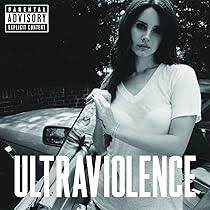
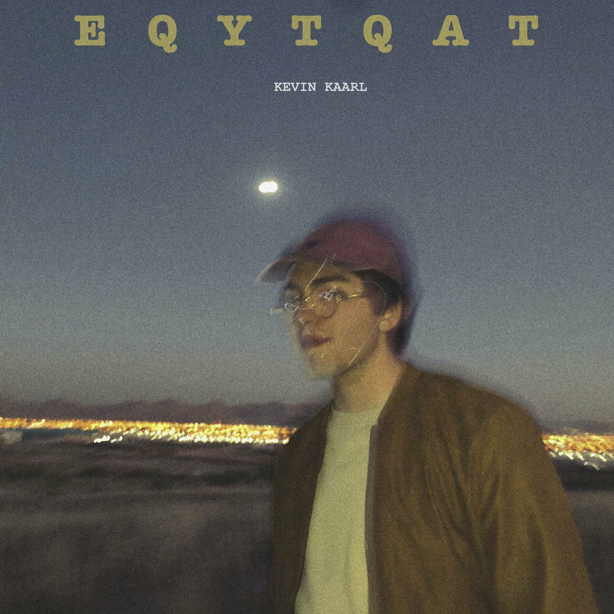
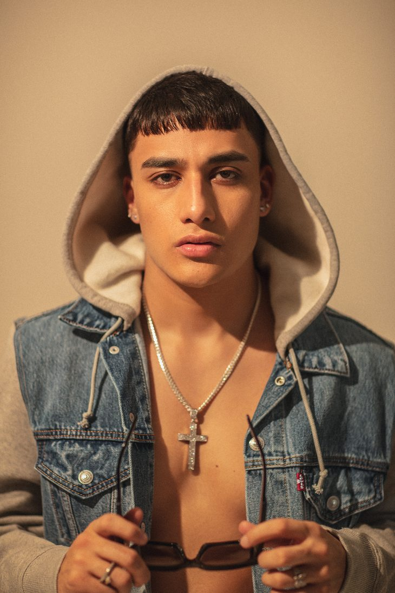

¿Quién soy?
Mi nombre es Yaritza Jetzabel, tengo 20 años y estudio el sextto semestre de Negocios Internacionales. Esta página web hablará sobre mis hobbies
¿Cuál es mi hobbie principal?
En mis tiempos libres disfruto mucho escuchar música, también cuando hago tareas o actividades de la escuela, cuando hago ejercicio, quehaceres, o simplemente para compartir momentos agradables con mis amigos, familia o novio.
La música me acompaña todos los días a todas horas y en todos los lugares a los que voy en mis audifonos y tengo muchos cantantes favoritos, aquí algunas fotos de ellos y mis albúms o canciones favoritas de cada uno.
Mi canción favorita de este álbum es Shades of cool
Mi canción favorita de este álbum es "Es que yo te quiero a ti"
Mi canción favorita del Malilla es Vaquero Remix

Mi canción favorita es Piénsalo
Cumpleaños
07 de julio de 2004
¿Dónde nací?
Xalapa, Ver.

¿Qué estudio?
Administración de Negocios Internacionales
¿Dónde estudio?
Universidad Veracruzana